Constellation
Model
genealogy
hackathon.
Identify the teachers behind distilled models.
Work with a team to trace model origins, develop creative methods, and contribute reproducible findings about where model capabilities come from.

Where do model capabilities come from? How much comes from distillation?
Distillation can help open-weight models catch up to the closed-weight frontier faster, accelerating race dynamics and spreading dual-use capabilities beyond trusted access programs.
We want to measure how much of today’s open-weight model performance comes from distillation, rather than other research or training data. That starts with identifying which teachers contributed, and how much.
Your task.
Given a set of evaluation models, predict which teachers each model was distilled from, if any. For bonus points, identify the type of data used in distillation.
Submit your predictions and a brief writeup of your methods. We’ll provide teams with standardized GitHub repositories and documentation requirements to make findings reproducible.
Spend a day
tracing model origins.
Join around 30 researchers, engineers, and builders for a day of hands-on research into model provenance. Work in teams of 3–5, compare approaches, and follow the evidence together.
- When
-
– Pacific - Where
- Constellation 6E
- Format
- In person · teams of 3–5
Breakfast, lunch, and dinner included.
The plan for the day.
All times Pacific. Schedule subject to change.
- Breakfast & onboarding
- Introductory talkSpeaker to be announced
- Task introduction & hackathon begins
- Lunch breakOne hour
- Hackathon continues
- Hackathon finishes & dinnerJudging begins · one-hour dinner break
- Concluding remarks & awards
Before you join.
Who is this for?
People interested in model provenance, distillation, and AI safety. Programming or machine learning experience will be useful. We welcome interest from experienced practitioners and people earlier in their research careers.
Do I need a team already?
You can express interest on your own or with teammates. Teams will have 3–5 people, and we’ll share more about team formation ahead of the event.
What awards will there be?
We’ll recognize the best performance, a creative approach, and a judge’s choice. Bring methods that are effective, original, and reproducible.
What happens after the hackathon?
We plan to work with participants promptly after the event to produce a paper and blog post documenting the findings.
Trace a model’s
family tree.
Interested in joining us on December 5? We’re getting ready to open applications. Save the date and check back here for the form.